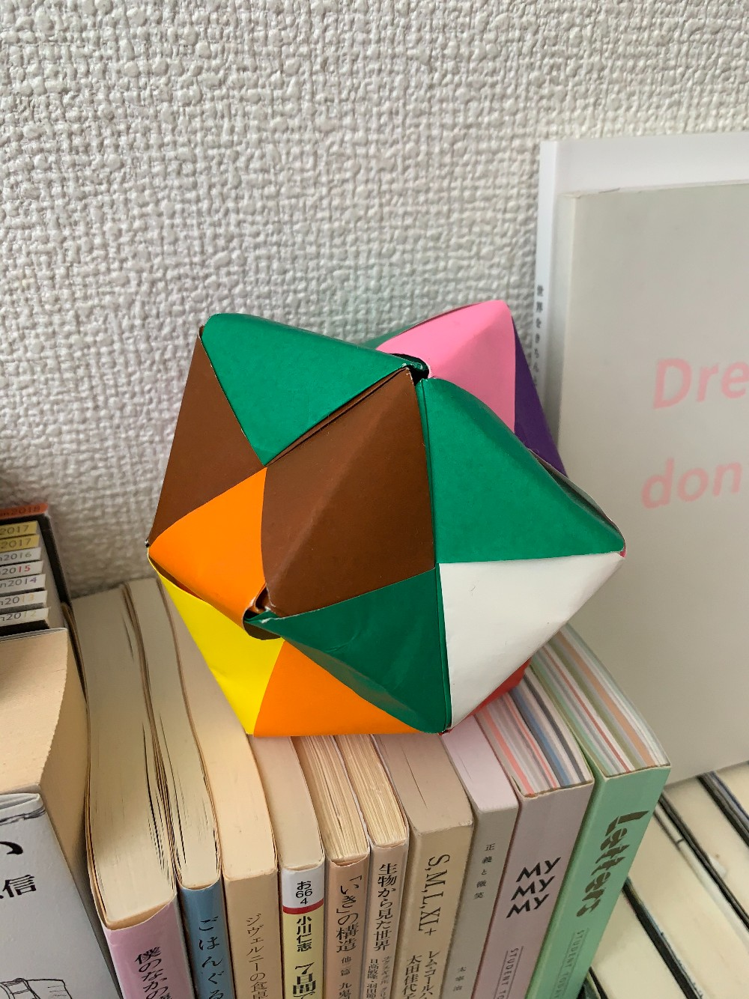

大学に入って間もない頃、みんなまだ居場所がなくて部屋によく集まってた。そんなある日にたわいもない会話を交わしながら置いてあった折り紙である子が折り合わせたもの。「はい、でけた ~」
本人はまさかまだ持ってるとか、そもそも作った覚えなんてないかも。何回も捨てるタイミングはあったけど大事な何かを思い出せなくなりそうで、そうやってなんとなく大切にしてきたいま、あの日の記憶に唯一触れられるぶんれいばこになった。
時間も一緒に折り込められた無意識のりき作、、、